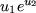
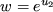
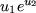
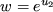
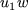
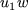

When specifying the function and derivative
values of a nonlinear element,
it often happens that an expression occurs more than once.
It is then convenient to define an auxiliary parameter
to have the
value of the common expression and henceforth to refer to the
auxiliary parameter. For instance, a nonlinear element of the two
internal variables  and
and  might be
might be  (The names
of the internal variables
have already been specified in the ELEMENT TYPE
section of the SDIF and are known as reserved parameters.)
Its gradient
vector (vector of first partial derivatives)
has components
(The names
of the internal variables
have already been specified in the ELEMENT TYPE
section of the SDIF and are known as reserved parameters.)
Its gradient
vector (vector of first partial derivatives)
has components
 and . If we define the auxiliary parameter
, the derivatives
are then
and . If we define the auxiliary parameter
, the derivatives
are then  and .
and .
The TEMPORARIES indicator card is used to announce the names of any auxiliary parameters which are to be used in defining the function and derivative values of the nonlinear elements. This list should also include the name of any intrinsic and external functions used. The syntax for data cards following the indicator card is given in Figure 4.3.
The single-character string in field 1 specifies the type of auxiliary parameter that is to be defined. Possible types are integer (I), real (R), logical (L), intrinsic function (M) or external function (F). The string p-name in field 2 then gives the name of the auxiliary parameter. The name must be a valid Fortran name, see Section 3.1.2, but must not be a reserved one, i.e., one of the names assigned to the internal variables or parameters for the element in question in the ELEMENT TYPE section of the SDIF (see, Section 3.2.15). Any auxiliary parameter that is to be used must be defined in the TEMPORARIES section along with all intrinsic and external function names.